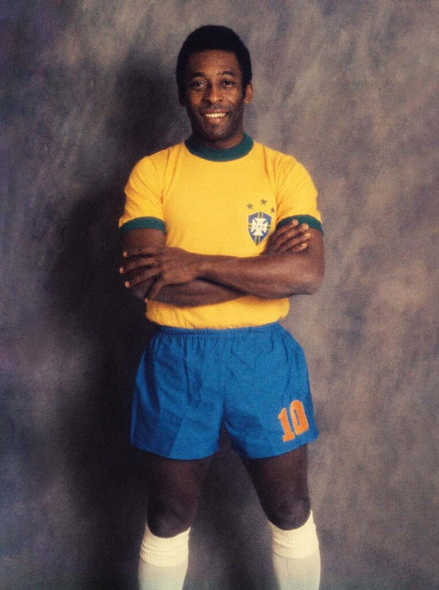
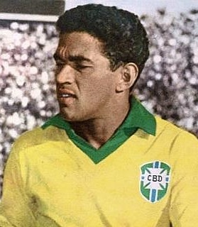
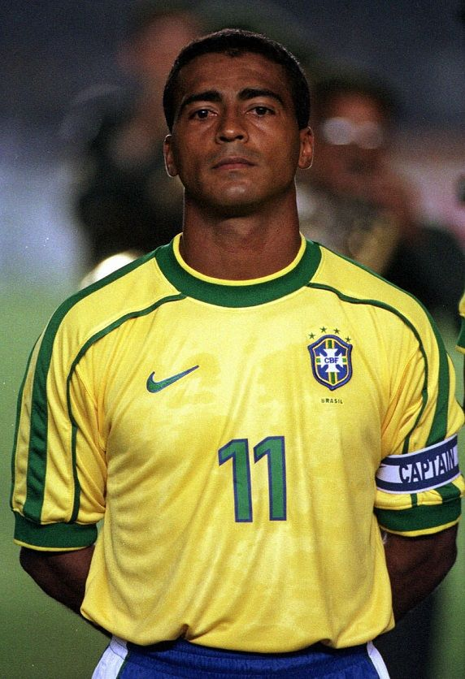
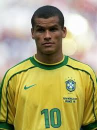
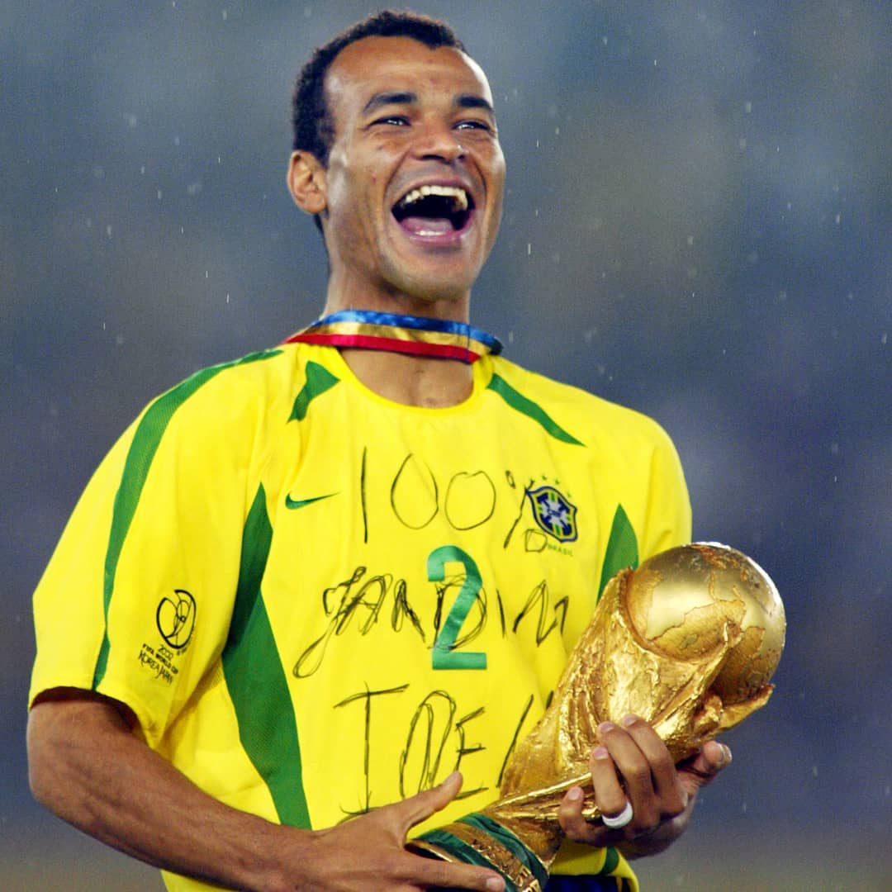
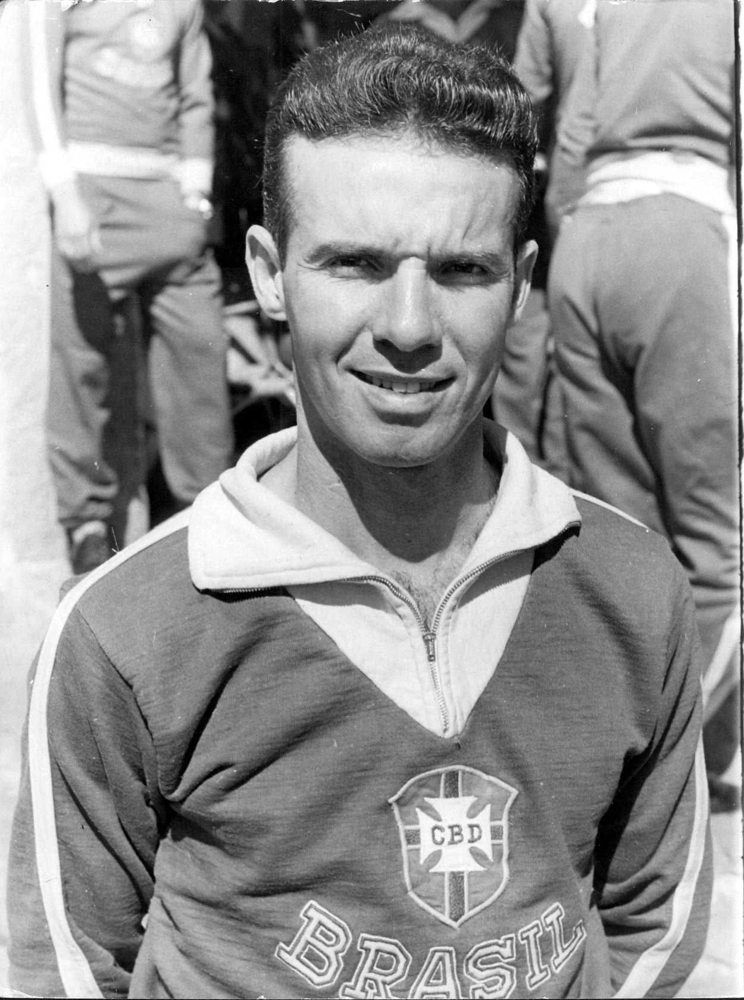
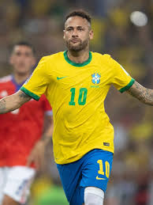
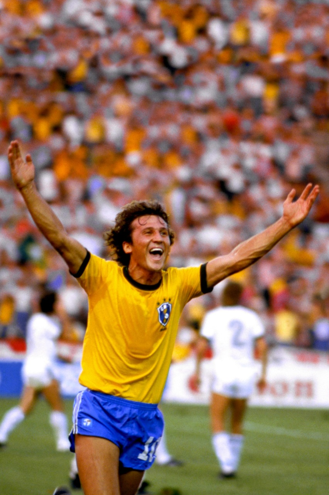

Os 10 Maiores da Amarelinha
Esta é uma lista de peso! Montar um site sobre a Seleção Brasileira exige falar desses ícones que transformaram o futebol em arte.

1. Pelé
O Rei do Futebol dispensa apresentações. Único jogador a vencer três Copas do Mundo, ele transformou o Brasil na maior potência do esporte e fez do número 10 o símbolo da genialidade.

2. Ronaldo "Fenômeno"
O maior exemplo de superação da história. Com sua velocidade e finalização impecável, Ronaldo foi o protagonista do Penta em 2002 e é um dos maiores artilheiros das Copas do Mundo.

3. Garrincha
O "Anjo das Pernas Tortas" era a alegria do povo. Conhecido por seus dribles desconcertantes, ele assumiu o protagonismo no bicampeonato de 1962, provando que o futebol também é improviso e diversão.

4. Romário
O "Baixinho" foi o dono da grande área. Com uma frieza absurda diante do gol, carregou o Brasil rumo ao Tetracampeonato em 1994, sendo um dos atacantes mais letais da história.

5. Rivaldo
O herói silencioso do Penta. Dono de uma perna esquerda mágica, Rivaldo aliava elegância e eficiência, sendo fundamental para a Seleção Brasileira.

6. Cafu
Capitão do Penta e único jogador a disputar três finais consecutivas de Copa do Mundo. Sua resistência física e liderança o transformaram em uma lenda.

7. Zagallo
O "Velho Lobo" é sinônimo de Seleção Brasileira. Venceu Copas como jogador e treinador, dedicando sua vida às cores do Brasil.

8. Ronaldinho Gaúcho
O bruxo do futebol. Ronaldinho trouxe a magia ao campo com dribles incríveis e gols históricos, encantando torcedores do mundo inteiro.

9. Neymar
Principal nome da Seleção na última década. Dono de habilidade rara, Neymar alcançou marcas históricas, ele se tornou o maior artilheiro da história da seleção brasileira em gols oficiais, e manteve viva a tradição do drible brasileiro.

10. Zico
O "Galinho de Quintino" é um dos maiores camisas 10 da história. Mestre nas cobranças de falta e visão de jogo, liderou a inesquecível Seleção de 1982.